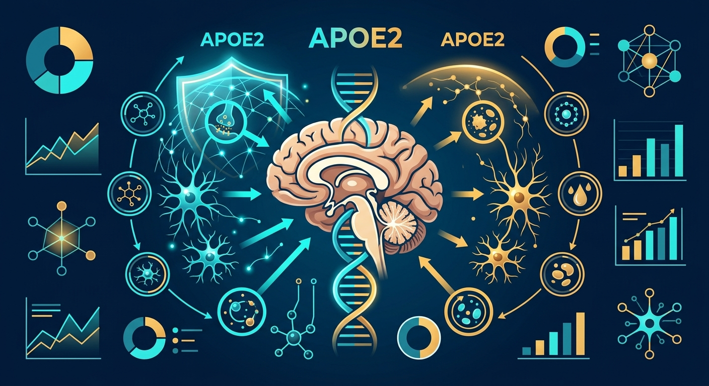

Decoding Nature's Shield: How APOE2 Rewires the Aging Brain to Resist Alzheimer's

For decades, neuroscientists studying Alzheimer's disease have focused on the dark side of human genetics—most notably APOE4, a high-risk gene variant that dramatically accelerates cognitive decline. But flip the genetic coin, and a rare sibling variant emerges: APOE2. Individuals fortunate enough to carry APOE2 display an extraordinary resistance to neurodegeneration, frequently maintaining crisp cognitive function into their nineties and beyond. Now, cutting-edge research is illuminating the precise molecular mechanics behind this genetic shield, demonstrating how APOE2 actively defuses the toxic cascades that destroy aging neural networks.
At the heart of this neuroprotective phenomenon is APOE2’s ability to orchestrate cellular housekeeping within the brain's supportive ecosystem. Unlike APOE4, which impairs metabolic transport and fosters hyperphosphorylated tau aggregation, APOE2 enhances lipid homeostasis and restores essential clearance pathways in astrocytes and microglia. By preventing toxic lipid accumulation and facilitating the efficient clearance of misfolded tau proteins, APOE2 halts the destructive domino effect before structural damage takes hold in vulnerable brain tissue.
Crucially, this protective dynamic intersects with one of longevity science's central drivers: cellular senescence. When brain cells encounter chronic stress from tau buildup or mitochondrial dysfunction, they frequently enter a senescent state—ceasing replication and secreting a cocktail of pro-inflammatory signals that inflame neighboring cells. APOE2 acts as a circuit breaker in this destructive feedback loop. By keeping mitochondrial health intact and suppressing tau pathology, APOE2 prevents glia from adopting senescent phenotypes, directly blunting chronic neuroinflammation and warding off the cortical atrophy that characterizes Alzheimer's progression.
For biotech investors and longevity researchers, these mechanistic insights mark a pivotal shift from tracking disease progression to actively engineering resilience. Rather than attempting to patch up degraded neurons after clinical symptoms appear, therapeutics can now be designed to mimic APOE2’s unique structural conformation and downstream biochemical signaling. Gene therapies utilizing adeno-associated viruses (AAVs) or targeted RNA therapeutics aimed at shifting an APOE4 cellular microenvironment toward an APOE2-like state are rapidly moving from theoretical concept to preclinical pipelines.
Yet, translating nature's rare genetic fortune into a reliable human therapeutic remains a formidable challenge. Much of the granular mechanistic data relies on simplified cellular constructs and animal models, which fail to mirror the multi-decade biological complexity of human neurodegeneration. Furthermore, systemically overexpressing or mimicking APOE2 carries risks of off-target lipid dysregulation and metabolic side effects in peripheral tissues. Achieving safe, uniform vector delivery across the human blood-brain barrier without triggering immune rejection presents another major engineering bottleneck. Until rigorous clinical trials demonstrate both safety and true cognitive preservation in humans, APOE2 stands as an inspiring biological blueprint rather than an immediate clinical cure.
Insights from Longevity KG: The protective mechanisms of APOE2 highlight a critical node where genetic resilience intersects with the fundamental hallmarks of neurodegenerative aging. While APOE4 accelerates pathology leading to tau-driven Alzheimer's disease, APOE2 counters this cascade by dampening cellular senescence and downstream neuroinflammation. Mitochondrial dysfunction and metabolic stress typically force vulnerable glial cells into senescent phenotypes, driving cortical atrophy; APOE2 breaks this pathogenic axis by maintaining organelle integrity and protein clearance. Understanding this genetic shield demonstrates how targeting senescence and proteinopathy simultaneously can preserve brain structure and extend human cognitive healthspan.
Sources & Citations:
Primary Source: pubmed.ncbi.nlm.nih.gov (Web Source)
- Primary Study: Zhao et al., APOE2 protects against Alzheimer's disease pathology and neurodegeneration, PubMed PMID: 35728834. https://pubmed.ncbi.nlm.nih.gov/35728834/